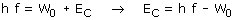

| El trabajo de extracción (W0) es la energía que necesita un electrón para poder escapar de un metal. Depende sólo de la naturaleza del metal En el efecto fotoeléctrico un electrón absorbe un fotón y utiliza su energía (h·f) para escapar del metal (W0) y adquirir energía cinética:  La energía cinética depende del trabajo de extracción (A menor trabajo de extracción mayor energía cinética) y de la frecuencia de la radiación (A mayor frecuencia mayor energía cinética). Si la frecuencia es inferior a W0/h la energía
cinética será negativa lo que significa que no se produce
la emisión fotoeléctrica |